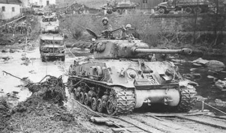

PERANG BOJOGKOKOSAN
Peristiwa Bojongkokosan atau biasa dikenal dengan perang konvoi adalah peristiwa heroik yang dilakukan oleh rakyat Sukabumi yang
disusun oleh TKR (Tentara Keamanan Rakyat) dengan Letnan Kolonel Eddie Sukardi sebagai pimpinannya dalam menghalau pasukan
sekutu (Inggris) yang diboncengi NICA untuk kembali menduduki kekuasaannya di Indonesia.